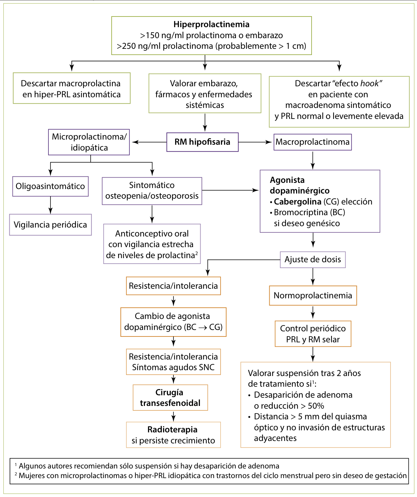
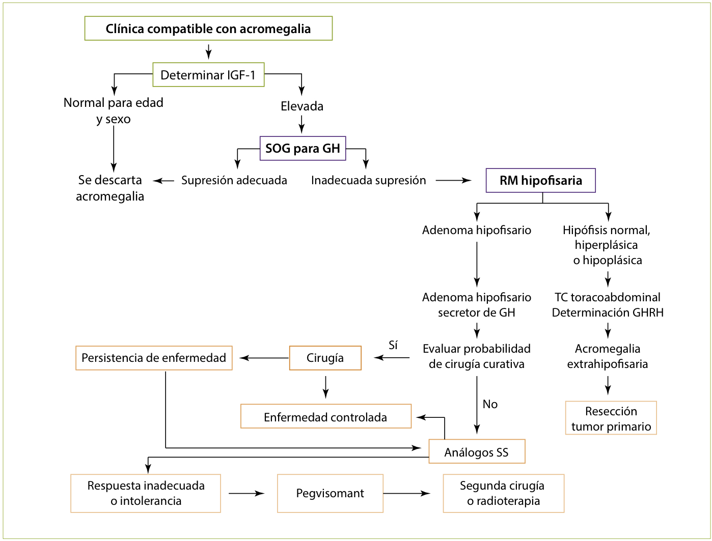
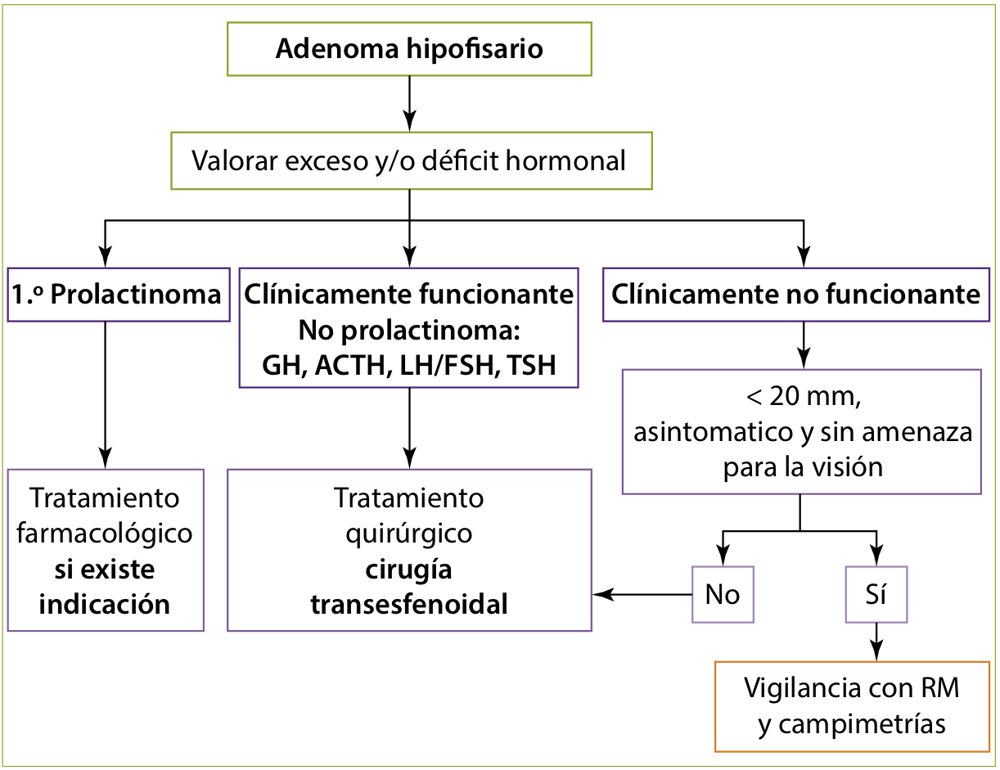
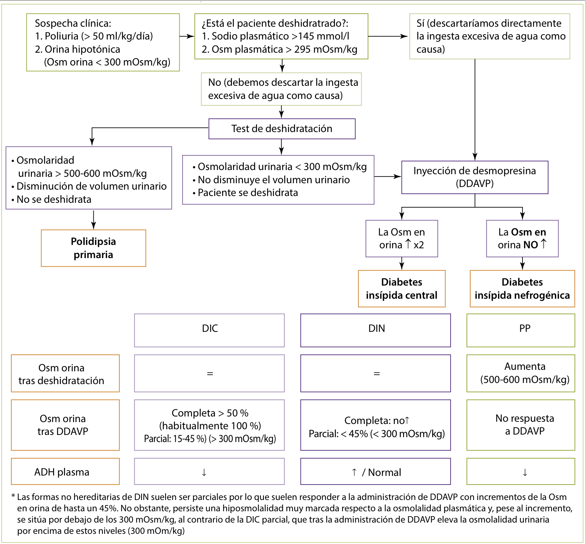
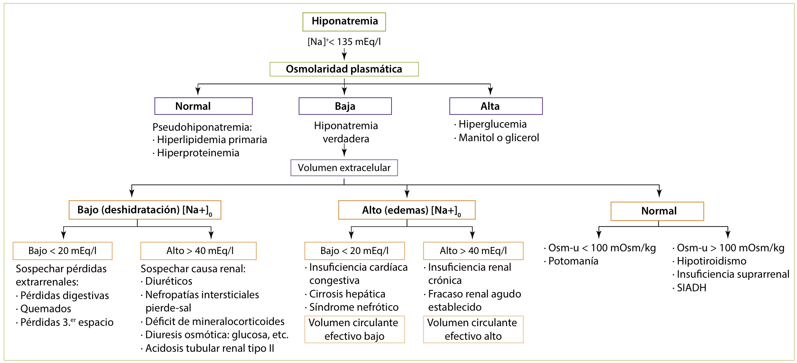
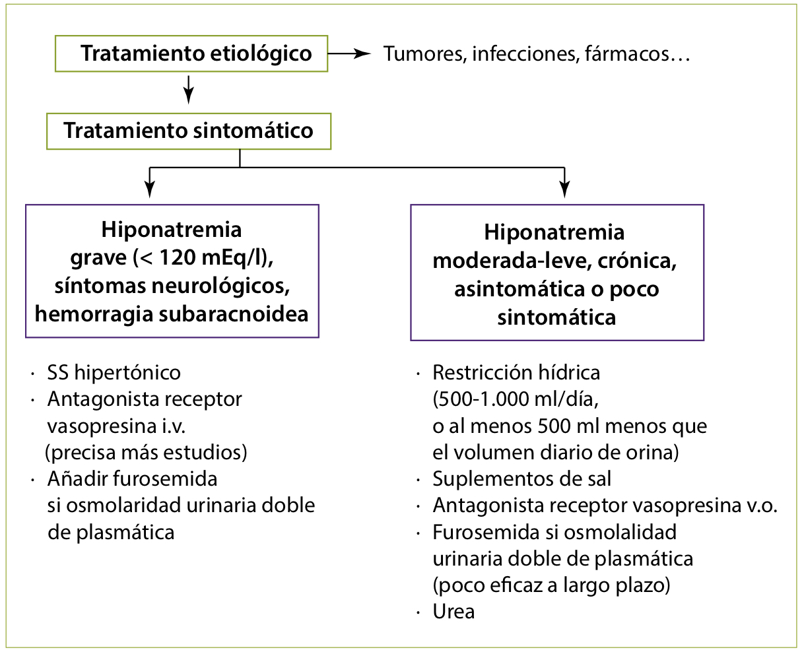

La concentración de PRL es algo mayor en la mujer (<20-25 ng/ml o µg/l) que en el varón (<15-20 ng/ml o µg/l). Durante la gestación, los valores aumentan progresivamente hasta el parto (valores máximos entre 100-250 ng/ml). La causa más frecuente de hiperprolactinemia en la población general es la gestación (fisiológica). La causa patológica más frecuente son los fármacos.
| Hipersecreción fisiológica |
|
|---|---|
| Compresión del tallo hipofisario (PRL < 100-150 ng/ml) |
|
| Hipersecreción hipofisaria |
|
| Trastornos sistémicos (PRL < 100 ng/ml) |
|
| Fármacos (PRL < 150 ng/ml) |
|
Tabla 1. Etiología de la hiperprolactinemia
La macroprolactinemia se debe a la presencia de formas de PRL de alto peso molecular unidas a anticuerpos de tipo IgG, que son inmunológicamente detectables pero biológicamente inactivas. Se debe sospechar ante cualquier paciente con hiperprolactinemia que no asocia síntomas.
El “efecto Hook” consiste en el bloqueo de los anticuerpos empleados en la determinación de prolactina por la elevada cantidad de hormona, que provoca un resultado falsamente normal o sólo levemente elevado (<200 ng/ml). Se debe sospechar ante un paciente con un macroadenoma y clínica asociada con elevaciones leves.
Mujer en edad fértil: - Anomalías del ciclo menstrual, como oligoamenorrea o infertilidad debida a ciclos anovulatorios. - Galactorrea (producción de leche fuera del periodo posparto), en el 30-90%.
La asociación de amenorrea y galactorrea indica exceso de prolactina en el 75% de los casos.
Varón: - Disminución de líbido - Impotencia e infertilidad - A largo plazo: Pérdida de masa muscular, de caracteres sexuales secundarios y osteoporosis.
La hiperprolactinemia del varón y de la mujer en edad no fértil (antes de la menarquia y tras la menopausia) rara vez produce ginecomastia o galactorrea.
Determinación de PRL en todo paciente con hipogonadismo central o galactorrea.
La PRL es una hormona de estrés y sus valores pueden aumentar por el estrés de la venopunción (falsos positivos), por lo que hay que usar la segunda muestra de una vía periférica colocada 15-20 minutos antes.
La PRL se secreta en pulsos, una sospecha clínica elevada obligaría a repetir las determinaciones de PRL si el resultado ha sido normal (falso negativo).
RM de la región hipotálamo-hipofisaria a todos los pacientes que presenten una hiperprolactinemia que no esté claramente justificada (embarazo, enfermedad sistémica). En los pacientes en tratamiento con un fármaco que puede elevar los niveles de PRL, se debe realizar otra determinación tras la suspensión del mismo, si no es posible la retirada, hay que realizar una prueba de imagen hipotálamo-hipofisaria.
Adenomas hipofisarios secretores más frecuentes. Se dividen en microadenomas/microprolactinomas (<10 mm) y macroadenomas/macroprolactinomas (≥ 10 mm).
Los prolactinomas son más frecuentes en las mujeres y, los microprolactinomas son más habituales que los macroprolactinomas. Sin embargo, el tamaño suele depender de la expresividad clínica de la enfermedad. El 90% de los pacientes con microprolactinomas son mujeres (la clínica en la mujer en edad fértil no pasa desapercibida y se diagnostican pronto) y el 60% de los pacientes con macroprolactinomas son varones (los síntomas pasan desapercibidos y el retraso en acudir al médico explica la mayor frecuencia de tumores voluminosos). Además de la clínica derivada de la hiperprolactinemia, los macroprolactinomas pueden producir síntomas por compresión o invasión de estructuras alrededor de la silla turca (alteración visual, cefalea, etc.).
Los agonistas de la dopamina son el tratamiento de primera elección: - Agonistas dopaminérgicos clásicos: Bromocriptina. El tratamiento se inicia de forma progresiva para evitar la intolerancia por náuseas, vómitos, fatiga, congestión nasal e hipotensión ortostática. - Agonistas dopaminérgicos modernos. Quinagolida y cabergolina. Presentan menos efectos secundarios que los anteriores y son más eficaces. La cabergolina tiene una vida media larga y se administra 1-3 veces/semana. Los macroprolactinomas que no responden a los agonistas clásicos sí pueden hacerlo a estos fármacos.
La cirugía es necesaria en los pacientes con defectos visuales persistentes a pesar del tratamiento con agonistas dopaminérgicos y en aquéllos que no toleran los agonistas dopaminérgicos.
Pacientes con prolactinomas resistentes a agonistas DA y cirugía, con tendencia probada al crecimiento.
 Figura 2. Algoritmo diagnosticoterapéutico de la hiperprolactinemia/prolactinoma
Bromocriptina es el agonista DA de elección en la gestación o cuando existen deseos de gestación por existir mayor experiencia de uso que con cabergolina.
Proliferación benigna del tejido glandular mamario en el varón. Se presenta como una tumoración justo bajo la aréola, que puede ser móvil, en ocasiones dolorosa y unilateral o bilateral. La más frecuente es la ginecomastia puberal persistente. Le siguen en frecuencia la etiología farmacológica (espironolactona, cimetidina, inhibidores de 5-M-reductasa, ketoconazol, estrógenos, antiandrógenos, etc.) y la idiopática. Otras causas menos frecuentes son la cirrosis hepática, la insuficiencia renal crónica, el hipogonadismo, el hipertiroidismo o los tumores por secreción de hCG o estradiol.
| Ginecomastia | |
|---|---|
| Marcadores tumorales |
|
| Hormonas |
|
Tabla 3. Pruebas bioquímicas a solicitar en el estudio de una ginecomastia.
El diagnóstico diferencial se realiza con la pseudoginecomastia (aumento mamario por tejido graso) y con el cáncer de mama. El manejo de la ginecomastia depende de su etiología. En la ginecomastia idiopática la observación suele ser el proceder habitual, ya que no es rara su resolución espontánea, aunque si la evolución de la misma es >1 año, habrá que recurrir al tratamiento quirúrgico. Se puede emplear tratamiento médico en casos de <1 año de evolución en pacientes con ginecomastia dolorosa o con afectación psicológica. Se suele emplear moduladores selectivos del receptor de estrógenos (tamoxifeno), aunque su eficacia es limitada (mejoran el dolor, pero no consiguen resolver el aumento del tejido glandular totalmente) y han de suspenderse si no hay mejoría en 2-3 meses.
La causa más de frecuente de acromegalia (95%) es el adenoma hipofisario productor de GH.
Incremento de la mortalidad que dependerá fundamentalmente de causas cardiovasculares, cerebrovasculares y respiratorias.
Resistencia insulínica en el 80%, intolerancia a la glucosa en el 50% y DM clínica en el 10-15%.
Puede aparecer amenorrea con o sin hiperprolactinemia (tumores cosecretores de GH y PRL o hiperprolactinemia por compresión del tallo hipofisario).
El hirsutismo es común. Aparecen con más frecuencia pólipos nasales.
Puede existir hipercalciuria y cálculos renales, y es frecuente la existencia de niveles de fosfato elevados. Sin embargo, la presencia de hipercalcemia suele deberse a la asociación con hiperparatiroidismo primario en el contexto de una MEN tipo 1.
 Figura 4. Diagnóstico y tratamiento de la acromegalia
RM hipofisaria para descartar compresión del quiasma óptico y una evaluación completa de la función hipofisaria para descartar la existencia de panhipopituitarismo.
En todos los pacientes acromegálicos se aconseja realizar en el momento del diagnóstico una colonoscopia y cribado de las posibles complicaciones (HTA, DM, enfermedad cardiovascular, osteoartropatía y apnea del sueño).
La cirugía transesfenoidal es el tratamiento que potencialmente puede curar al paciente y se considera como tratamiento de elección en los microadenomas y macroadenomas potencialmente resecables.
Se utiliza en aquellos pacientes no curados tras la cirugía o cuando está contraindicada o el paciente la rechaza. No se utiliza en los pacientes con extensión supraselar (riesgo de afectar al quiasma óptico). El riesgo de hipopituitarismo a 10 años ronda el 50%.
El tratamiento médico de elección en la acromegalia son los análogos de la somatostatina. Pueden utilizarse como primera opción terapéutica (no totalmente consensuado) en pacientes con un riesgo quirúrgico inaceptable. Como segunda opción terapéutica están indicados tras un tratamiento quirúrgico que no consigue la curación del paciente. - Octreotida. - Lanreotida.
| Criterios diagnósticos |
|---|
| Aumento de IGF-1 de acuerdo a edad y sexo |
| Sobrecarga oral de glucosa para GH (120 min): GH > 1 μg/l o > 0,3 μg/l con ensayos ultrasensibles |
| Criterios de curación |
| IGF-1 normal de acuerdo a edad y sexo |
| Sobrecarga oral de glucosa para GH (120 min): GH < 1 μg/l o < 0,4 μg/l con ensayos ultrasensibles |
| Criterios de control de enfermedad en pacientes en tratamiento con análogos de SS |
| GH basal aleatoria < 1 μg/l |
| IGF-1 normal de acuerdo a edad y sexo |
| Criterios de control de enfermedad en pacientes en tratamiento con pegvisomant |
| GH no sirve puesto que está elevada con este tratamiento |
| IGF-1 normal de acuerdo a edad y sexo |
Tabla 5. Criterios diagnósticos y de curación. Acromegalia y gigantismo
La causa más frecuente en el adulto son los tumores hipofisarios y paraselares y/o el tratamiento quirúrgico/radioterápico de los mismos (90% de los casos).
Síntomas: - Aumento de grasa corporal - Disminución de masa muscular - Disminución de fuerza física - Disminución de sudoración - Disminución de vitalidad - Alteración psicológica y de calidad de vida
Signos: - Sobrepeso - Aumento de adiposidad abdominal - Hipotrofia muscular - Piel fina y seca - Afectividad deprimida
La dosis se debe regular para mantener los niveles de IGF-1 aproximadamente en la mitad del rango normal para sexo y edad. La GH está contraindicada en presencia de enfermedad tumoral, hipertensión intracraneal y retinopatía diabética.
Generalmente macroadenomas que producen FSH o FSH junto a LH; rara vez LH sola. El tratamiento de los macroadenomas productores de gonadotrofinas es similar al de los adenomas hipofisarios clínicamente no funcionantes (cirugía, radioterapia o ambas).
Niveles séricos bajos de testosterona o estradiol, acompañados de concentraciones bajas de FSH y de LH. Puede ser congénito o adquirido. Entre los trastornos hereditarios se encuentran: - Síndrome de Prader-Willi - Síndrome de Laurence-Moon-Biedl.
El síndrome de Kallman, o hipogonadismo hipogonadotrófico idiopático, se debe a un déficit aislado de gonadotrofinas por un defecto en la síntesis o liberación de GnRH (mutación del gen KAL). La secreción del resto de las hormonas hipofisarias suele mantenerse intacta. Frecuentemente implica anosmia o hiposmia, hipotrofia testicular, criptorquidia y malformaciones renales. Forma recesiva ligado al cromosoma X.
| Tratamiento sustitutivo con testosterona | |
|---|---|
| Efectos deseables |
|
| Efectos adversos |
|
| Contraindicaciones | Cáncer de mama y próstata, hematocrito > 50%, PSA > 4, ICC mal controlada, tumores hepáticos previos o existentes |
| Formasde administración |
|
Tabla 7. Tratamiento sustitutivo con testosterona en el varón (HBP: hiperplasia benigna de próstata; SAHS: síndrome de apnea-hipoapnea del sueño; ICC: insuficiencia cardíaca congestiva; i.m.: intramuscular)
| Hipotiroidismo Primario | Hipotiroidismo Central | |
|---|---|---|
| T4, T3 | Disminuidos | Disminuidos |
| TSH | Aumentada | Disminuida o inadecuadamente dentro de la normalidad |
| Colesterol | Aumentado | Normal |
| Bocio | Sí/no | No |
| Déficits hormonales asociados | No frecuentes | Sí frecuentes (ACTH-cortisol) |
| Tratamiento | Levotiroxina | Levotiroxina (+ otras hormonas, si precisa) |
| Seguimiento de tratamiento | TSH | T4 Libre |
Tabla 8. Características diferenciales entre hipotiroidismo primario e hipotiroidismo central.
El adenoma hipofisario secretor de TSH (TSHoma) es muy poco frecuente y habitualmente se presenta como macroadenoma. Clínicamente cursa con síntomas derivados del efecto masa del tumor, junto con hipertiroidismo y bocio difuso. El tratamiento de los adenomas productores de TSH va dirigido al tumor (cirugía + radioterapia).
La causa más frecuente de déficit reversible de ACTH es el tratamiento prolongado con glucocorticoides.
Los tumores hipofisarios secretores más frecuentes son los prolactinomas (galactorrea e hipogonadismo central). Los tumores productores de GH (acromegalia) son los segundos en orden de frecuencia. Les siguen los adenomas corticotróficos (secretores de ACTH-enfermedad de Cushing), los adenomas productores de gonadotrofinas (la mayoría, clínicamente silentes) y los productores de TSH (hipertiroidismo central). Los adenomas hipofisarios también pueden formar parte de la MEN-1.
Defectos campimétricos por expansión supraselar (más frecuente la hemianopsia bitemporal). Si la extensión es lateral, invadiendo los senos cavernosos, se producen parálisis oculomotoras, la más frecuente la del III par craneal. La presencia de hidrocefalia y diabetes insípida (DI) orientaría más a patología hipotalámica (craneofaringioma).
| Tumores Benignos |
|
|---|---|
| Tumores Malignos |
|
| Otras Lesiones |
|
Tabla 9. Diagnóstico diferencial de las masas selares.
El infarto hemorrágico agudo de un adenoma hipofisario produce un síndrome llamativo caracterizado por cefalea intensa de inicio brusco, disminución del nivel de consciencia, irritación meníngea, oftalmoplejía y alteraciones pupilares. La descompresión neuroquirúrgica debe realizarse cuando exista compromiso visual, alteración del nivel de consciencia o alteración hipotalámica.
 Figura 7. Algoritmo terapéutico de los adenomas hipofisarios.
Los agonistas dopaminérgicos se consideran el tratamiento de elección de los prolactinomas. Los análogos de la somatostatina son el tratamiento complementario a la cirugía más eficaz en la acromegalia. Estos últimos pueden ser útiles también en los adenomas productores de TSH.
| Idiopáticas o genéticas |
|
|---|---|
| Enfermedades infecciosas, granulomatosas e infiltrativas |
|
| Necrosis y alteraciones vasculares |
|
| Enfermedades Autoinmunitarias |
|
| Neoplasias |
|
| Yatrógenas |
|
Tabla 10. Causas de hipopituitarismo.
La hipofisitis linfocitaria o hipofisitis linfoide autoinmunitaria se asocia al embarazo y posparto. Se debe a una destrucción linfocitaria de la hipófisis. Algunas formas pueden producir hiperprolactinemia (por compresión del tallo hipofisario) y diabetes insípida (infundíbulo-neurohipofisitis). En la TC o RM aparece una masa que, tras la biopsia, muestra una infiltración linfocitaria. Algunos autores indican tratamiento con corticoides a altas dosis
El síndrome de Sheehan es una necrosis hipofisaria que aparece cuando el parto se complica con hemorragia intensa e hipotensión. La disminución brusca del flujo sanguíneo a la hipófisis, hipertrofiada durante la gestación, produce una hipoxia hipofisaria y el infarto glandular isquémico. Como consecuencia de ello, se produce un hipopituitarismo completo. Las pacientes diabéticas tienen mayor riesgo de infarto hipofisario. Su primera manifestación suele ser la incapacidad para la lactancia tras el parto por la ausencia de PRL.
| Hormona | Determinaciones Basales | Pruebas Funcionales | Tratamiento |
|---|---|---|---|
| GH | IGF-1 (puede tener falsos negativos en el diagnóstico de déficit de GH) |
|
|
| ACTH | Cortisol basal < 3,5 μg/dl es diagnóstico,> 18 μg/dl excluye el diagnóstico |
|
|
| PRL | PRL basal (a veces no excluye el déficit) | No se utilizan pruebas de estímulo |
|
| TSH | TSH y T4L basales (un 30% de pacientes tiene TSH basal normal) | Test de TRH (en desuso porque no discrimina bien entre lesión hipotalámica e hipofisaria) | Levotiroxina oral, después de corticoides si coexiste déficit de ACTH |
| LH/FSH |
|
|
|
Tabla 11. Diagnóstico y tratamiento del hipopituitarismo.
Cuando la hipófisis no llena la silla turca, el espacio restante es ocupado por líquido cefalorraquídeo (LCR).
No hay evidencia de tumor preexistente. Mujeres obesas, multíparas e hipertensas. El aumento de presión del LCR es uno de los mecanismos implicados en el origen de la silla turca vacía. La función hipofisaria suele ser normal, pero puede existir hiperprolactinemia. Rara vez el quiasma óptico se desplaza hacia abajo y puede existir rinorrea de LCR espontánea (únicas indicaciones de cirugía).
Tras infarto o destrucción (cirugía, radioterapia) de una hipófisis aumentada de tamaño o portadora de un adenoma. En estos casos, suele ser necesaria la reposición de las hormonas deficitarias.
Liberación por el organismo de grandes cantidades de orina (volumen de orina > 50 ml/kg/día) hipotónica (osmolaridad urinaria < 300 mOsm/kg). Descartar, en primer lugar, un exceso de ingesta de líquidos (polidipsia primaria). La DI puede estar causada por una falta de liberación de la ADH (DI central) o bien por la ausencia de respuesta del riñón a la ADH (DI nefrogénica).
La causa más frecuente de DI central es la idiopática y es muy típico el comienzo brusco (el paciente recuerda el día que se inició la enfermedad). Otras causas son tumores, cirugía, traumatismos, encefalopatía hipóxica y alcoholólica, clorpromacina y fenitoína.
Mucho más frecuente que la congénita y raramente es grave (se asocia a un síndrome poliúrico moderado). Las causas más frecuentes son hipercalcemia y administración de litio (las dos causas más comunes en el adulto), hipopotasemia y enfermedades tubulointersticiales renales.
 Figura 9. Diagnóstico de la diabetes insípida.
Los pacientes hipotensos o con sintomatología grave del SNC precisan administración de suero salino fisiológico al 0,9% intravenoso. Si no, utilizar soluciones hipotónicas (hiposalino o SG).
Los pacientes con cierta reserva de ADH (DI parcial) pueden responder al tratamiento con carbamazepina. Los antidiuréticos cuyo efecto no está mediado por ADH son tiazidas y AINE (indometacina).
El único tratamiento posible para la mayoría de estos pacientes es la restricción de sal-proteínas y la administración de diuréticos que aumenten la natriuresis con un efecto antidiurético secundario: - Tiazidas y otros diuréticos: hidroclorotiazida y amilorida. - Evitar la ingesta excesiva de líquido. - AINE como tratamiento coadyuvante (indometacina).
El síndrome de secreción inadecuada de ADH (SIADH) se caracteriza por la presencia de hiponatremia, secundaria a la retención de agua libre debido a una secreción de ADH inapropiadamente elevada. Como consecuencia, disminuye la diuresis, aumenta la concentración de sodio urinario (> 40 mEq/l) con aumento de la osmolalidad urinaria (> 100 mOsm/kg), y disminuye la osmolaridad plasmática, desarrollándose una hiponatremia dilucional.
El SIADH debe sospecharse en todo paciente con hiponatremia (<135 mmol/l), hiposmolalidad plasmática (<275 mOsm/kg), volumen extracelular normal (sin edemas, ni datos de deshidratación) y orina sin máxima dilución (> 100 mOsm/kg). El diagnóstico de SIADH se establece tras la exclusión de otras causas de hiponatremia con volumen extracelular normal (hipotiroidismo, insuficiencia suprarrenal). Criterios diagnósticos: - Fundamentales: - Disminución de la osmolalidad plasmática efectiva (<275 mOsm/kg). - Osmolalidad urinaria > 100 mOsm/kg. - Euvolemia clínica. - Excreción urinaria de sodio > 40 mmol/l, con dieta normosódica. - Función tiroidea y suprarrenal normales. - Complementarios: - Uricemia < 4 mg/dl. - BUN (nitrógeno ureico sanguíneo) < 10 mg/dl. - Prueba de sobrecarga oral de agua alterada. - Concentraciones plasmáticas de AVP elevadas.
 Figura 10. Algoritmo del diagnóstico diferencial de la hiponatremia
 Figura 11. Tratamiento del SIADH
Enfermedades de la Hipófisis y del Hipotálamo
Tags: #endocrino #hipofisis #hipotalamo #CTO #MIR